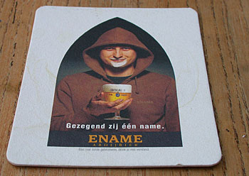

Poëzienacht
vrijdag 11 juli 2003 | Zomaar
Gisterenavond was het feest in de straten van Ename 974! Onder een bijzonder surrealistische avondhemel, vond er de eerste Vlaamse Poëzienacht plaats. Net als in 16 andere Vlaamse steden en gemeenten, hadden de koudmetalen auto-lanen langs de huizen voor één keer hun plaats afgestaan aan de houten podia van een bont gezelschap dichters, muzikanten en toneelspelers.
De inwoners van Ename hadden zich duidelijk geïnspireerd op hun unieke, 1000 jaar oude, en woelige geschiedenis. En hoe kan je zo’n sfeer beter benaderen dan door een batterij stevige vertellers enkele klassiekers te laten voordragen onder de nachtelijke schaduw van een kerk met muren uit 974 A.D.? Je kon switchen van Beatrijs naar de stoere historie van Karel ende Elegast of het pittige Marieken van Nieumeghen. Ah, ik hou van die verhalen! Ik was er in mijn retorica ook al weg van. Op de site van Project Laurens Coster vind je er een hele resem van.
Het hele gebeuren voelde heel ‘Gentse Feesten’ aan. Die nacht heb ik ook bijzonder goed geslapen: zachtjes in slaap gewiegd door een straatsymfonie van late stemmen die door het raam naar binnen drong, en wellicht ook door de vier Enames Blond na afloop ;-)
